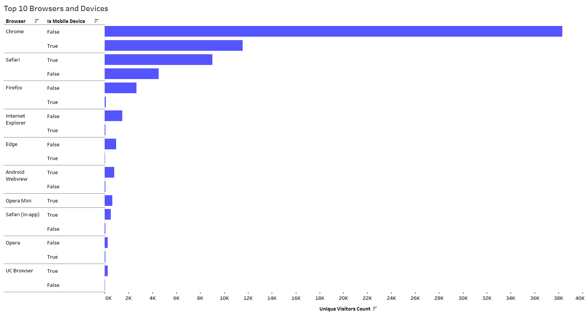
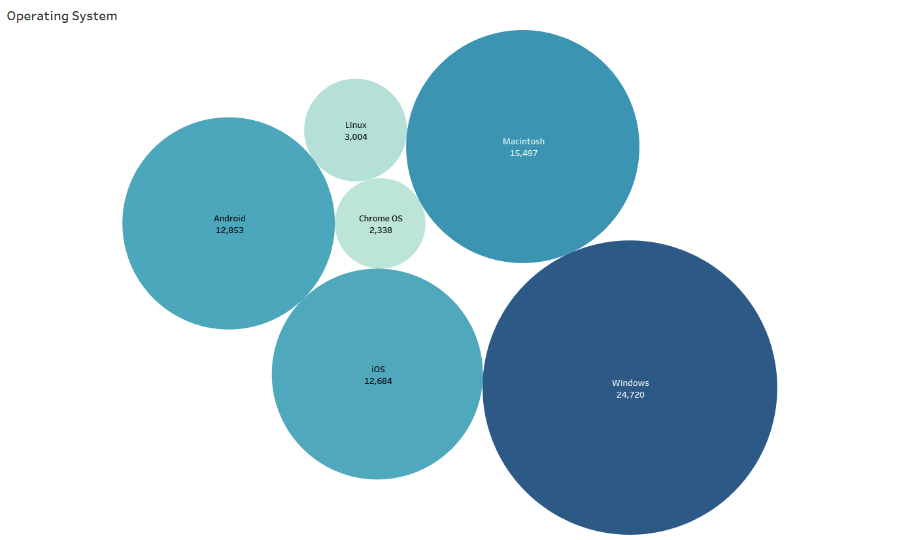
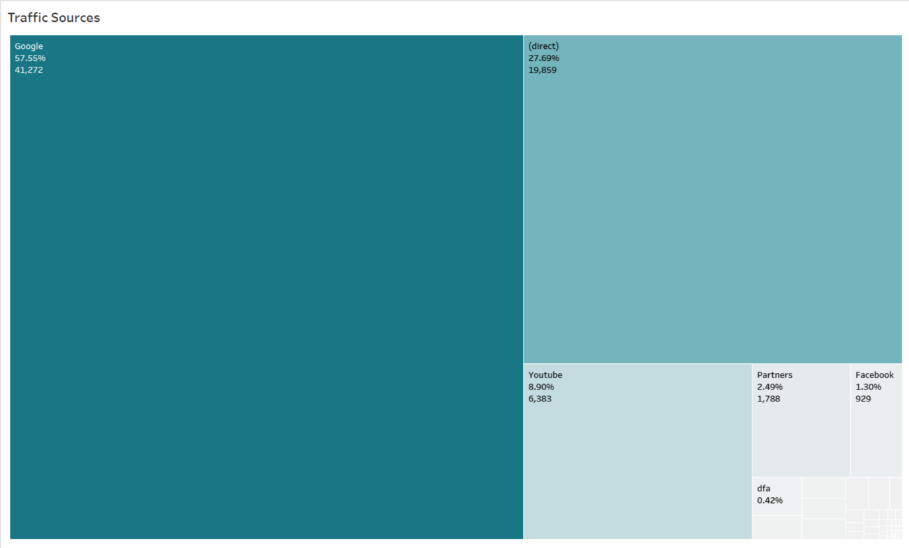
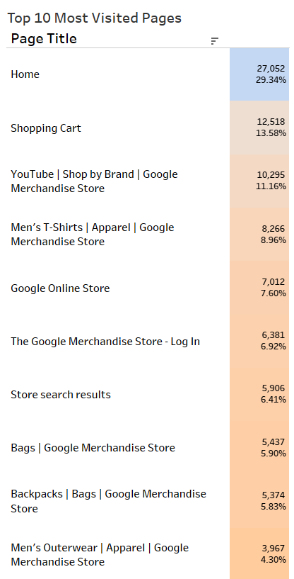
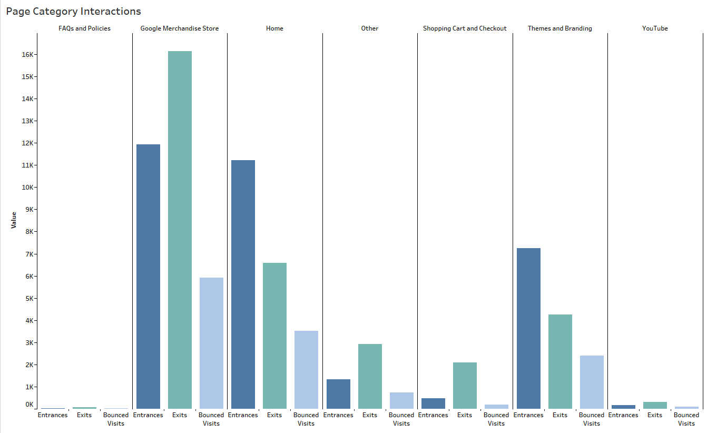
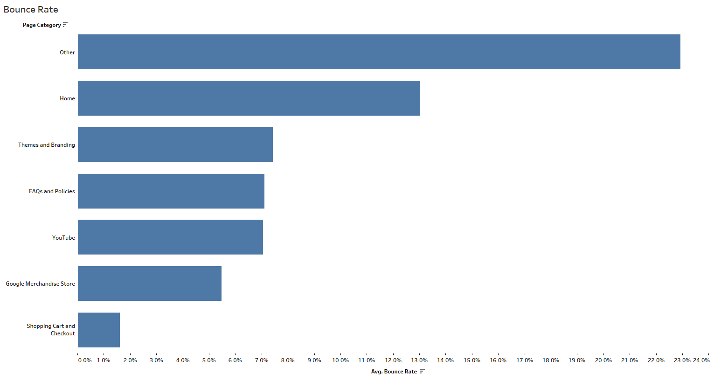
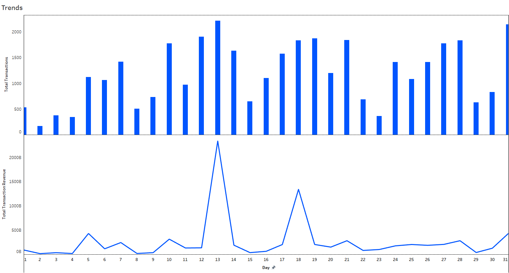
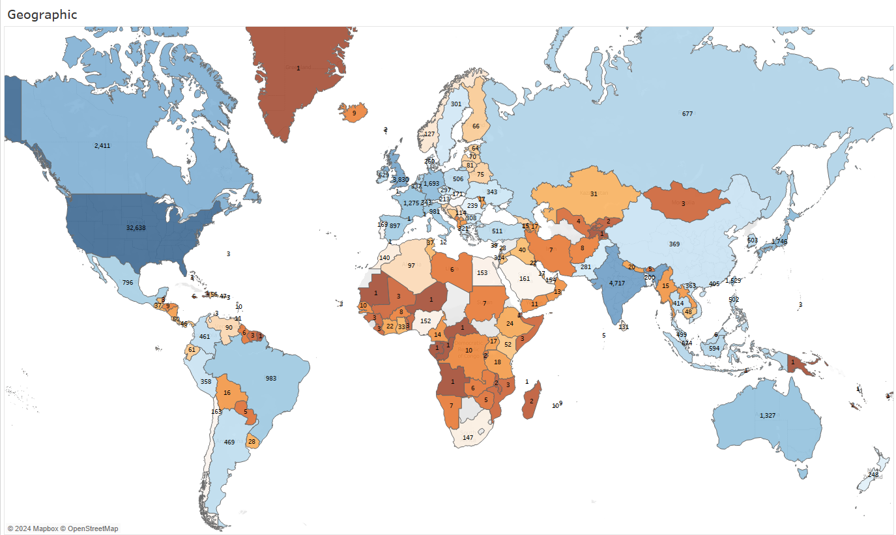

Navigating the Digital Landscape: Exploring Website Traffic Trends
In the digital landscape, website traffic is more than just a number -- it's a barometer of efficacy, measuring the pulse of brand visibility and awareness. Understanding and optimizing website traffic allows for businesses to tailor marketing efforts and improve user experiences, ensuring effective engagement with their audience and maximizing the impact of their online presence. [1]
This report explores website traffic trends for the Google Merchandise Store using a Google Analytics dataset from July 2017. [2] This dataset provides a glimpse at uncovering various aspects of website traffic including sources, page popularity, and customer interaction metrics, allowing for valuable insights into user behavior, such as transactions and engagement patterns. Through data-driven inquiries, this analysis provides the impetus for transforming website traffic into tangible business insights.
Examining the chart of browser and operating system interactions reveals robust support for a select few browsers, notably Chrome. It reigns supreme, capturing most of the unique visitors, and significantly outpacing its competitors. This underscores the importance of tailoring the website experience through its layouts and content presentation, especially for Chrome users, ensuring compatibility and enhancing user satisfaction and engagement. [3] While this dominance warrants attention, acknowledging the importance of other browsers like Safari and Firefox is crucial for ensuring cross-browser compatibility.
With regards to operating systems, aligning website optimizations for specific browser-OS combinations ensures a cohesive and satisfying experience, contributing to increased user engagement and satisfaction. Continuous monitoring of these trends and agile adaptations to evolving user behaviors will be pivotal in maintaining a dynamic and user-centric online presence. [4] Understanding the dominant operating systems like Android and iOS and their corresponding browsers allows for targeted mobile optimizations, ensuring a consistent and positive user experience across devices.
The analysis of traffic sources provides compelling perspectives into potential marketing strategies, content creation, and website optimization efforts. A slight majority of users (57.55%) accessed the website through Google, highlighting the search engine's pivotal role in driving traffic. By tailoring content for relevant keywords and investing in targeted Google Ads, this potent source of users can be further capitalized on, as content quality and user experience are crucial for search engine ranking. This underscores the importance of search engine optimization (SEO) in digital marketing strategies. [5][6]
Following from Google, more than a quarter of users (27.69%) entered the website directly. This suggests a strong brand presence or user loyalty, to further foster this loyal audience targeted brand-building initiatives should be encouraged. [7]
The influence of video content should not be underestimated, roughly a tenth (8.90%) of users entered through YouTube. Expanding video marketing strategies offers exciting potential for further growth. While the remaining traffic sources and search engines individually contribute minor shares, collectively, they still represent a diverse array of avenues through which users discover the website. As user behavior is dynamic, it's essential to continuously analyze sources and adapt approaches to remain relevant and capture unique and diverse audience segments. [1]
 Exploring user activity on pages reveals valuable insights into their interests and engagement patterns. The merchandise store, home page, and themes and branding categories attract significantly more visitor traffic compared to others, indicating their high relevance and appeal. It should be noted that the category distinction is an amalgamation of individual pages, the methodology and reasoning behind this will be addressed in the conclusion.
Examining user engagement at the page level goes beyond just identifying popular sections. User journeys begin with entrances, gauging which pages attract initial interest. Conversely, an exit occurs when a user departs from a specific page, either by navigating to a different website or closing the browser tab. Bounces, for instance, represent a single-page session. Demonstrating instances where users don't explore beyond the landing page. [8] These interactions can offer a comprehensive picture of user engagement behavior. [9]
The chart demonstrates consistently low bounce rates across various page categories. This points towards effective content and navigation, catering to diverse user interests and behaviors. Analyzing this data across categories provides valuable insights for strategic adjustments to refine content, navigation, and the overall user experience. Additionally, continuously monitoring bounce rates and user behavior across different page categories allows for adaptation to strategies, to help ensure a more satisfying user experience.
Observing transaction trends reveals a nuanced relationship between transaction count and revenue. Overall, there is a positive correlation between transaction count and revenue, indicating a conventional alignment where increased transactions correspond to higher revenue.
Sometimes, significant transaction increases yield modest revenue gains. This suggests potential inefficiencies in our conversion funnel, where we might be attracting more users but struggling to convert them into paying customers. Conversely, in some instances, a slight uptick in transactions leads to a rapid surge in revenue, highlighting efficient monetization. These contrasting scenarios point towards opportunities to both improve revenue generation and replicate successful sales tactics across different periods. In addition, both transaction count and revenue consistently experience drop-offs during weekends.
A more detailed examination for strategic business optimization is warranted, to strategically enhance monetization tactics and ensure sustainable growth.
The geographic analysis demonstrates the United States as the primary driver of website traffic, followed by India and the United Kingdom at a considerable distance. Recognizing the United States as the leading source of traffic emphasizes the importance of allocating resources and marketing campaigns to align with the preferences of this demographic.
The substantial traffic from India and the United Kingdom on top of the U.S. indicates an Anglophone persuasion. Tailoring user experiences to international markets by offering culturally relevant references, and appropriate payment options paves the way for sustainable growth, as exemplified by India's rapidly expanding internet user base. Understanding why certain regions dominate helps in creating a robust and adaptive online presence that resonates with audiences across the globe.
Conclusion
In the realm of data analysis, SQL and Tableau emerge as indispensable tools, each wielding its unique strengths to distill meaningful insights from intricate datasets. Categorizing page titles, crucial for understanding user behavior due to its extensive listing, is facilitated by SQL. Systematically categorizing page titles with similar criteria allows for a more digestible visualization experience, by scaling down hundreds of unique entries. In the case of the traffic sources with its many labels that were duplicates of the same object, this was tackled using Tableau's "Group" feature. This created custom groups, consolidating similar labels under the same name for easier analysis.
Some further investigation into key metrics like time on page and conversion rate paints a deeper picture of user behavior, especially for businesses relying on paid traffic. [10] New customer acquisition and search engine rankings heavily depend on website traffic. Strategies like social media engagement, online advertising, and paid traffic effectively drive visitors. [1] Finally, examining seasonal trends in website traffic is valuable for businesses with fluctuating demand. Understanding peak seasons and user behavior during specific periods informs targeted marketing and content planning. Deriving insightful analysis with tools like SQL and Tableau uncovered user behavior patterns within vast website traffic data allowing for effective website traffic discussion.
References
[1] “Understanding the Importance of Website Traffic for Business Success.” AIContentfy, 6 Oct. 2023, aicontentfy.com/en/blog/understanding-importance-of-website-traffic-for-business-success.
[2] “[UA] Google Analytics Sample Dataset for BigQuery.” Google, support.google.com/analytics/answer/7586738?hl=en&ref_topic=3416089#zippy=%2Cin-this-article. “[UA] BigQuery Export Schema .” Google, support.google.com/analytics/answer/3437719?hl=en&ref_topic=3416089&sjid=6978402012183871862-NC.
[3] “How to Optimize Your Website for Different Browsers: A Comprehensive Seo Guide.” AIContentfy, 13 Oct. 2023, aicontentfy.com/en/blog/how-to-optimize-website-for-different-browsers-comprehensive-seo-guide.
[4] “How to Track Competitor Website Traffic [Tools + Strategies].” Surfer, 13 Oct. 2023, surferseo.com/blog/track-competitor-website/.
[5] McCormick, Kristen. “39 Ways to Increase Traffic to Your Website.” WordStream, 19 Dec. 2023, www.wordstream.com/blog/ws/2014/08/14/increase-traffic-to-my-website.
[6] Lahey, Connor. “The Importance of SEO: 10 Benefits of Search Engine Optimization.” Semrush , 6 Sept. 2023, www.semrush.com/blog/importance-of-seo/.
[7] Aranovitch, Martin. “How to Increase Website Traffic: Direct, Search, Referral, Social.” WPMU DEV , 1 Apr. 2022, wpmudev.com/blog/increase-website-traffic/.
[8] “Why Is Bounce Rate Important?” Business Assist, 23 Feb. 2022, businessassist.net/why-is-bounce-rate-important/.
[9] “What Are the Entrances, Exits, and Exit Rate Metrics?” Independent Analytics, 18 Sept. 2023, independentwp.com/knowledgebase/data/what-are-entrances-exits-exit-percentage/.
[10] Anderson, Dennis. “What is Website Traffic and How to Interpret It:” The BigCommerce Blog, BigCommerce, 25 Sept. 2023, www.bigcommerce.com/ecommerce-answers/what-is-website-traffic-and-how-to-interpret-it/.